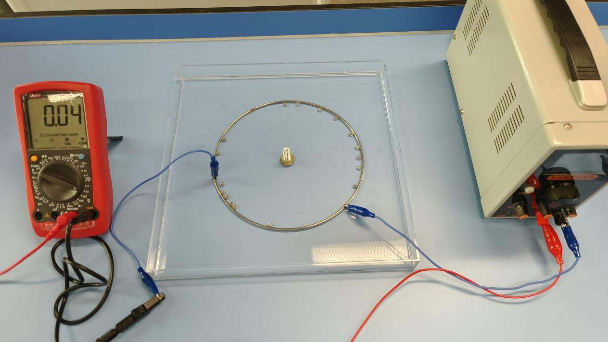
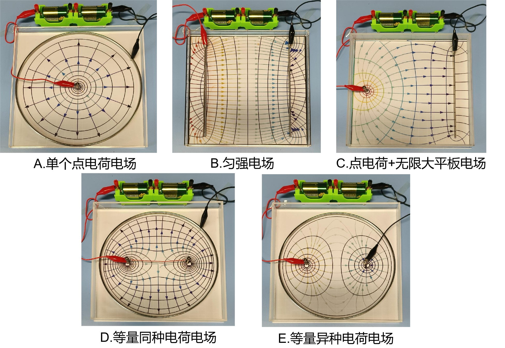
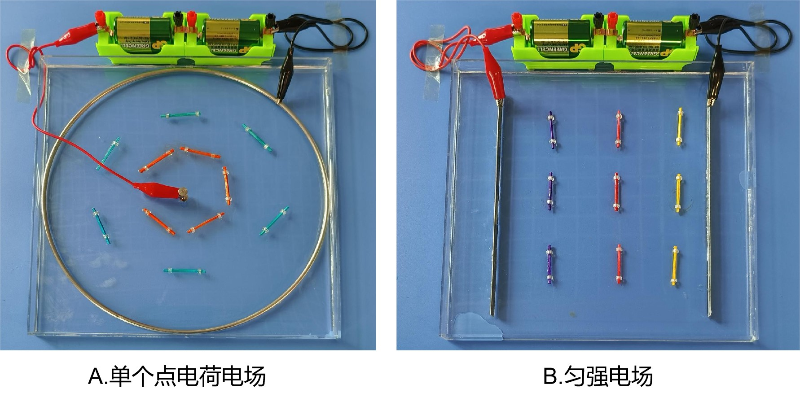
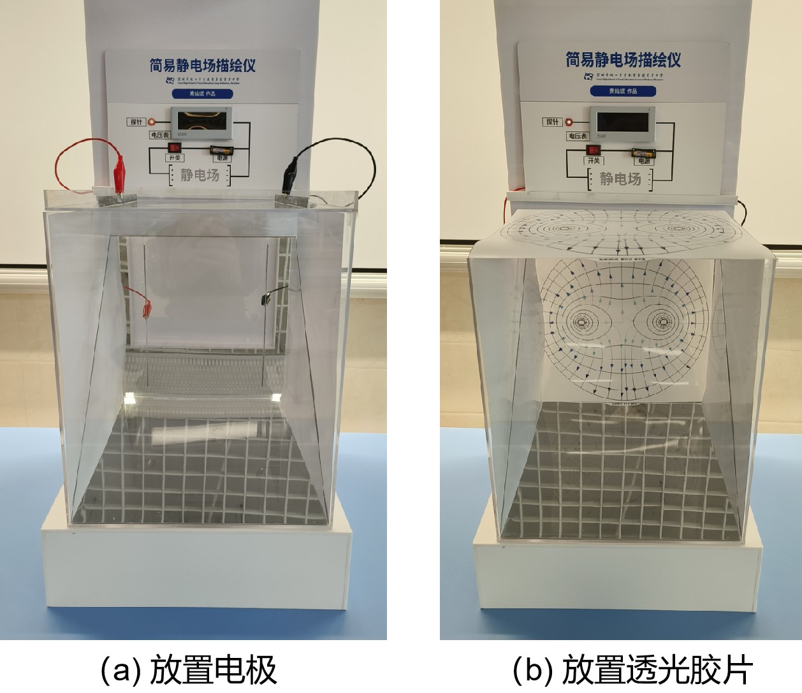
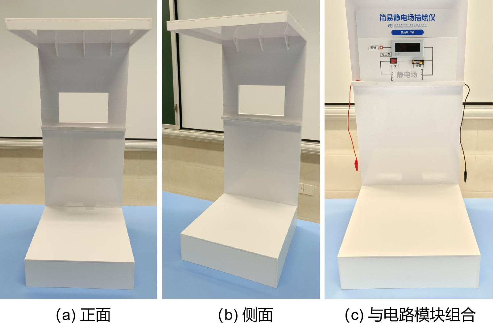
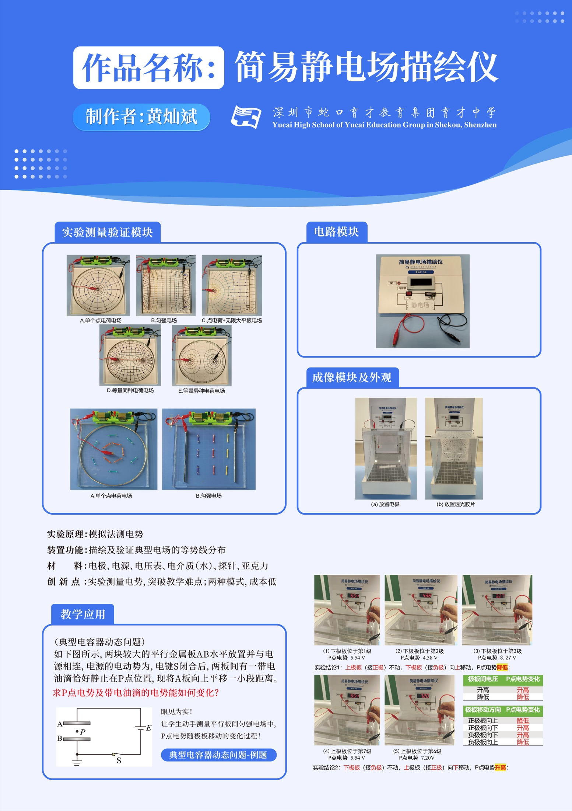
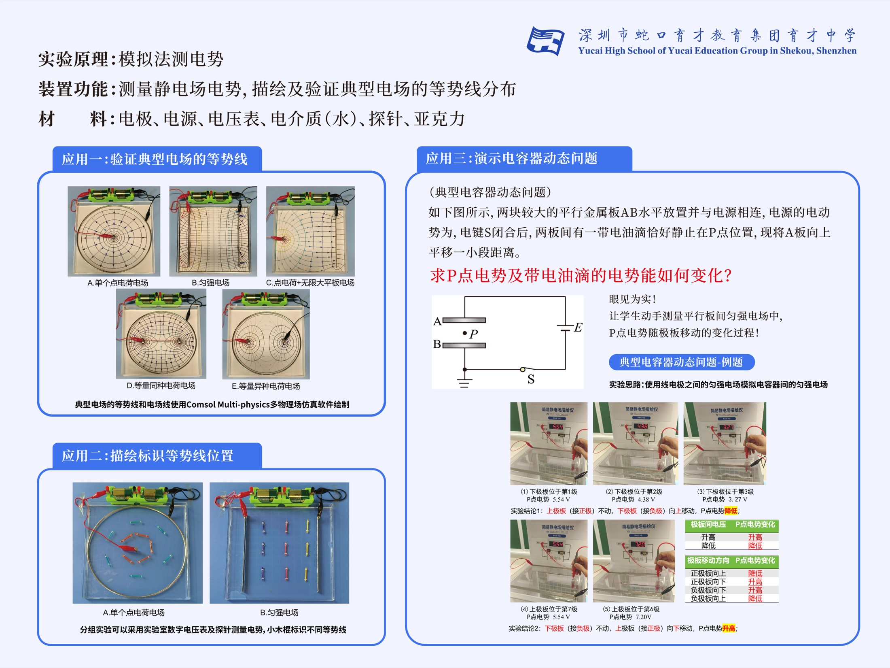
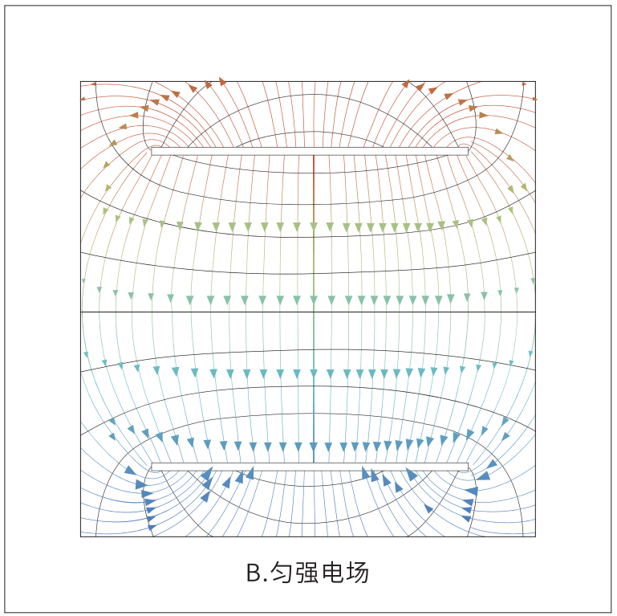

8 + 1
正文图与后台图分工
8 幅正文图逐步推进叙事；第 9 幅总览海报只在本页解释，避免重复、不可读缩文和旧宣传口径进入正文。
Internal review · 2026-09-02
结果达到“可交作者集中审阅”，尚未达到出版定稿或成熟复现实验说明。页面只汇总静电场一章，不改变共享主工作区及另外两章。
8 幅正文图逐步推进叙事；第 9 幅总览海报只在本页解释，避免重复、不可读缩文和旧宣传口径进入正文。
文稿、照片、证书、专利、程序与深挖报告均可回到具体原件；原始 Office、PDF 与共享主工作区保持只读。
薄水层方程、固定 P 点趋势和电势—场强关系均补齐条件、符号和解释边界。
| 验收项 | 状态 | 结果 |
|---|---|---|
| 正确 Git 根、项目与起点 | ✅ 完成 | 完整工作树、目标书项目及 `design/ai-research-workflow-v1` 起点均已只读确认。 |
| 指定提交接续 | ✅ 完成 | 指定提交无冲突接续；修改继续留在本章白名单。 |
| 事实档案 | ✅ 完成 | 结构验证通过；30 / 30 来源存在、定位齐全且 SHA-256 匹配。 |
| 物理与程序 | ✅ 完成 | 独立物理终审通过；Python 16 / 16 测试通过，但参数仍是示例值。 |
| 实物可复现 | ❌ 未完成 | 缺成熟 BOM、尺寸、冻结接线、水条件及新版原始测量。 |
| 出版与课堂证据 | ❌ 未完成 | 图权、正式重绘/裁图和学生学习证据均未完成。 |
每张图先回答一个问题，再规定读图动作，最后给出可写结论与主张上限。编号 06 有证据价值，但不进入正文。

上限：单一视角不能恢复完整接线；摄影权和产品标识待核。

上限：不能证明五槽同框、点电荷或无限平板；理想化名称宜重绘。

上限：画面无探针、目标值和原始读数，不能逐点核验。

上限：不能证明相机、投屏或测量精度；板面文字与摄影权待核。

上限：屏幕未点亮，不能证明远处可读，也不能裁决 12 V / 24 V。

不入正文：重复图 02—07，缩版文字不可读，并含姓名、校名、广告排版与旧宣传强口径。

上限：不能证明坐标、位移、五次独立测量、精度或重复性；正式版须从授权原件裁图。

上限：空气域和表面电荷边界来自笔记；图不能单独证明水槽模型，第三方输出许可待核。

上限：白色流线疏密不能量场强；示例参数未按实物定标。
无法追溯的项目可以直接确认“保留待核”。终审不要求为了叙事完整补写事实。